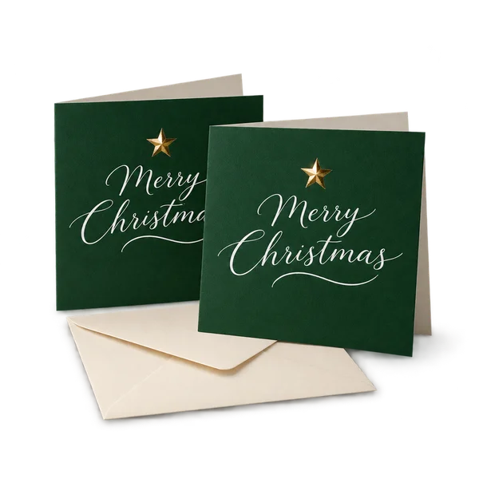
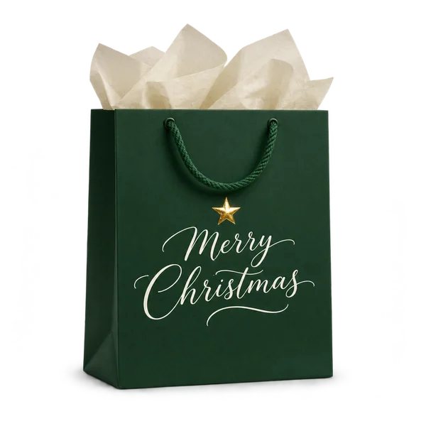
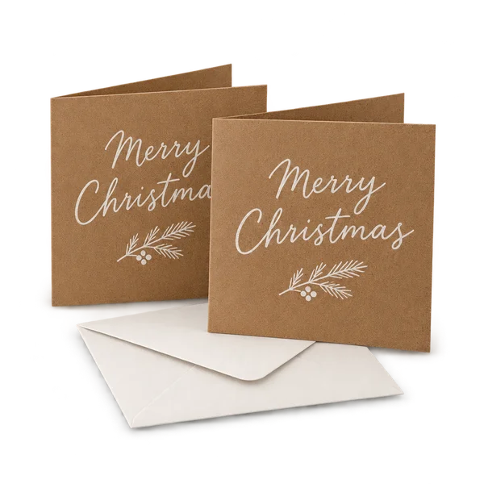
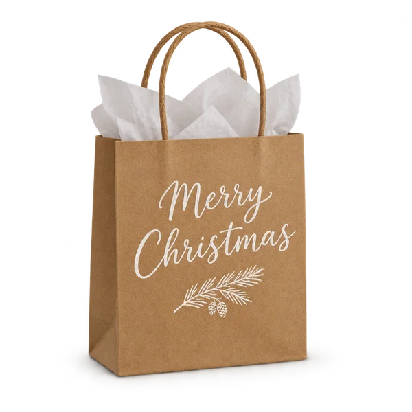

One design for every product on the Christmas page, as with Black Friday. The green "Merry Christmas" in capitals with the bright green bar becomes written: a script or hand-lettered "Merry Christmas" and one small, quiet detail. Same two products per style, on our grey tile.
A · Pine green, white script, a gold foil star my pick our green, warm and premium

Most PopularChristmas Cards
10 pcs from
€22.99

Christmas Gift Bags
50 pcs from
€89.99
B · Ivory cream, green brush script, a gold foil pine sprig the softest; light on our light grey tile
C · Kraft paper, handwritten white ink, a drawn pine sprig the most natural and handmade

Most PopularChristmas Cards
10 pcs from
€22.99

Christmas Gift Bags
50 pcs from
€89.99
Why A: it is the warm version of what we had: the written script and the small gold star make it feel like Christmas instead of a campaign, and the deep green keeps it ours and stands out on the light grey tile, row after row. B is the softest and most elegant, but cream on our light grey tile loses its edges (the same problem as black on black for Black Friday). C is charming, but kraft is a material, not every product has it (mugs, calendars, baubles, backpacks would need another colour), so the line breaks across the page.
For every product with A: pine green with the white script and the gold star; wood and bamboo engraved with the same script; the promo cards keep the close-ups on deep green.